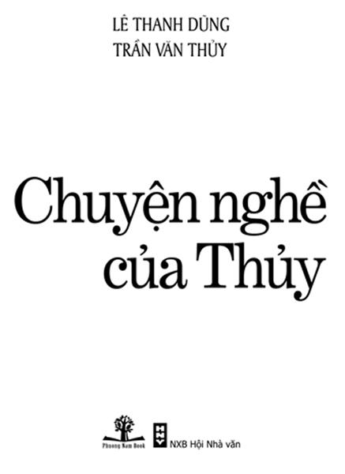

Tôi cùng Lê Thanh Dũng, bạn tôi làm cuốn sách này để tri ân những bậc cao niên, đồng nghiệp, khán giả, bằng hữu trong và ngoài nước – những người đã tin cậy nâng đỡ và khích lệ tôi trong suốt cuộc đời làm nghề. Tiếc rằng vì một lí do tế nhị nào đó mà tôi không thể kể đầy đủ danh tính những ân nhân của tôi – những người đã để lại trong ký ức tôi một niềm tin, dù mong manh, rằng cuộc đời này vẫn còn nhiều người tử tế.
Cám ơn Lê Thanh Dũng, bạn đã không bao giờ tỏ ra mệt mỏi khi chúng ta làm cuốn sách này, bạn đã kiên trì động viên, hối thúc và mắng mỏ tôi mỗi khi tôi chán nản và có ý định bỏ dở cuộc chơi này. Bạn là chuyên gia công nghệ truyền thông, bạn bảo, công việc của bạn, với văn chương chẳng dây mơ rễ má gì; với phim ảnh lại càng xa lắc xa lơ.
Vậy mà bạn đã xông vào cái trận đồ bát quái này một cách ngoạn mục...
Ða tạ!
☆